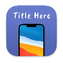

 App Screen Master

App Screen Master provides convenience for creating application screenshots. You can effortlessly customize backgrounds, select mockups, and add text. You have the ability to create multiple frames and adjust their dimensions. The key features are outlined below.
Backgrounds
Colors, gradients, and local images can all be used as backgrounds. Each one can be moved and scaled. You can quickly adjust the relationship between the Background and the Frame through the Scale Mode.Devices
You can add one or multiple devices to each frame, and each one can be moved, scaled, aligned, and more. The currently supported mockups are as follows.
- iPhone 12
- iPhone 13
- iPhone 14
- iPhone SE
- iPad 9th Gen
- iPad 11-inch
- iPad 12.9-inch
- MacBook Pro 13-inch 2020
- MacBook Pro 16-inch 2019
- MacBook Pro 16-inch 2021
- Google Pixel 4
- Google Pixel 5
- Google Pixel 6
- Google Pixel Tablet
Texts
You can add one or multiple texts to each frame, using all available system fonts, adjusting font size and color, and aligning the text as needed.

Multiple Frames Supported
You can simultaneously view, edit, or export multiple frames, which is very helpful for examining the overall effect of screenshots.
Shortcut Supported
- Move the board [Spacebar + Drag]
- Zoom the board [Option + Scroll]